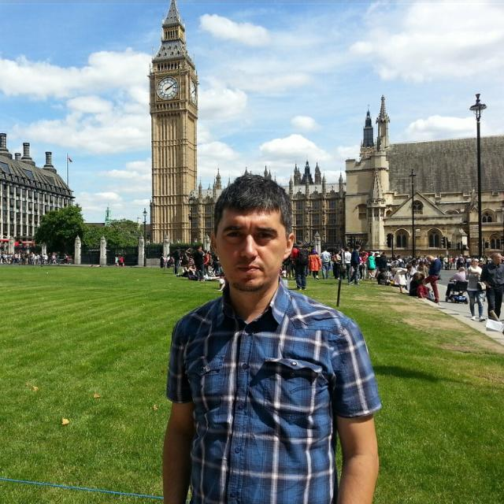

Dr. Öğr. Üyesi | Bilgisayar Mühendisliği | Sinop Üniversitesi
Yavuz Ünal is an academic researcher with expertise in image processing, computer vision, and machine learning. His research focuses on deep learning–based feature extraction, image classification, and optimization techniques applied to real-world problems. He has authored and co-authored several scientific publications in international journals and conferences. His academic interests include deep neural networks, computer vision applications, and data-driven intelligent systems.

Yavuz Ünal, Muzaffer Bolat, Muhammet Nuri Dudak. (2024). "Examining the Performance of a Deep Learning Model Utilizing Yolov8 for Vehicle Make and Model Classification". Journal of Engineering Technology and Applied Sciences, 9(2) 2017 : 131-143. [PDF] | [Proje Sayfası]
Yavuz Ünal, Muzaffer Bolat. "Detecting Wheat Leaf Diseases: A Deep Feature-Based Approach with Machine Learning Classification". Selcuk Journal of Agriculture and Food Sciences, Cilt: 38 Sayı: 3, 463 - 474. [PDF] | [Cite]
Yavuz Ünal, "Automated seven-stage diabetic retinopathy grading using optimized deep networks through systematic hyperparameter tuning". Discover Computing, 29, 200 (2026) [PDF] | [Cite]
Yavuz Ünal, Yonis Gulzar, "Enhanced Lemon Leaf Disease Diagnosis via Gray Wolf Optimization and Machine Learning Techniques". Applied Fruit Science, 68(3), 133 (2026) [PDF] | [Cite]
Yavuz Ünal, Elham Tahsin Yasin, Talha Alperen Cengel, Murat Koklu, "Classification of Turkish hazelnut (Corylus colurna L.) varieties: a comparative study of YOLOv8 and fine-tuned vision transformer". Journal of Food Measurement and Characterization, 1-15 (2026) [PDF] | [Cite]
Yavuz Ünal, "Integrating CBAM and Squeeze‐and‐Excitation Networks for Accurate Grapevine Leaf Disease Diagnosis". Food Science & Nutrition, 13(6), e70377 (2025) [PDF] | [Cite]
Burada devam eden veya tamamlanmış projeleriniz hakkında daha detaylı bilgi verebilirsiniz.
Araştırmalarım sırasında ürettiğim veya derlediğim kamuya açık veri setlerini aşağıda bulabilirsiniz. Bu veri setlerini atıf yaparak çalışmalarınızda kullanabilirsiniz.
Below you will find publicly available datasets that I generated or compiled during my research. You can use these datasets in your studies by citing them.
This dataset contains 307 high-resolution images of tobacco fields with manually annotated bounding boxes for tobacco plants and weeds. Images were captured in August 2023 in Erbaa, Tokat, Turkey under natural field conditions. It includes 1,516 total annotations — 984 tobacco plants and 532 weeds.
Format: JPG (Images), JSON (Annotations) | Size: 1.1 GB | Images: 307 (2976×3968 px) | License: CC BY 4.0
Citation: Y. Unal, "Impact of Attention Mechanisms and Focal Loss Tuning on RetinaNet Performance for Crop-Weed Detection: A Comparative Study With Anchor-Free Detectors," IEEE Access, vol. 14, pp. 52626–52640, 2026, doi: 10.1109/ACCESS.2026.3680687
Download (1.1 GB) Zenodo PageÖrnek dataset, Örnek dataset, Örnek dataset, Örnek dataset, Örnek dataset, Örnek dataset, Örnek dataset.
Format: PNG Boyut: 500 MB
İndir (Zenodo) GitHub SayfasıVerdiğim lisans ve lisansüstü derslere ait özet notlar, slaytlar ve ek materyalleri bu bölümden paylaşmayı planlıyorum. İlgili dönemi ve dersi seçerek materyallere ulaşabilirsiniz.
Günlük görevlerinizi takip etmek ve odak sürenizi yönetmek için bu küçük aracı kullanabilirsiniz. Görevler tarayıcınızda saklandığı için sayfayı kapatsanız bile kaybolmaz.
E-posta: yunal@sinop.edu.tr
Ofis: dahili 4359, Sinop Üniversitesi Mühendislik ve Mimarlık Fakültesi Binası Kat2, Sinop Üniversitesi Kuzey Kampüsü
Akademik Profiller: Google Scholar | Orcid | LinkedIn | ResearchGate | Unis Profili | Scopus Profili |